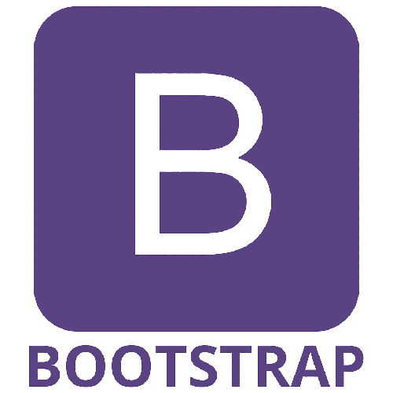

Con este lenguaje comencé la programación, es un lenguaje Tipado que desde sistema operativo como el Dos y después Windows nos permitía hacer una programación de los periféricos de las computadoras, manejo de puerto Serie y paralelo.
Con este lenguaje hice mi primerplaca de adquisición de señales analógicas y graficarlas en el monitor la primera versión fue desde un slot de la Pc y luego por comunicación serie.
Esta tomaba 8 señales analógicas y las graficaba con un manejo de interrupcion de tiempo timer.
El sistema visual basic es un lenguaje fuertemente tipado, para Windows
que nos permite conectividad con comunicación serie, redes ip, puerto paralelos y las API de windows.
Desarrolle placas de adquisición de datos en este sistema y logre la primer central de monitoreo donde se procesaban las señales de 8 monitore cardiacos y se graficaban en una o varias pantallas

Este fue el primer programa que era orientado a objetos basados en el lenguaje Pascal y permitía que las interfaces de Windows se programen mucho más fácil y permitan una interfaz mucho mejor además
permitía un fácil conexión con los motores de bases de datos y asi empezar hacer algunos cálculos estadístico.

Sql es un motor de base de datos muy potente que permite
una gestión de una gran cantidad de datos , con una buena gestión de reportes, gráficos, cálculos etc.

C++ es un lenguaje fuertemente tipado muy potente y que nos permite una gran intervención en los componentes de la PC.
Es el lenguaje que uso para la programación de microcontroladores PIC de la marca Microchip con microprocesadores de las familias 12xx,16xx y 18xx que permite desarrollar una gran cantidad de proyectos.
Nos permite programar desde medio nivel y bajo nivel , este lenguaje permite rutinas en assembler por lo cual nos da una gran intervención en el micro.
Con este lenguaje es fácil realizar y dotar de protocolos de comunicación a los microcontroladores, Rs232, Rs 485 , USB , IP etc.
HTML5 es un estándar que sirve como referencia del software que
conecta con la elaboración de páginas web en sus diferentes versiones, define una estructura básica y
un código (denominado HTML) para la definición de contenido de una página web, como texto, imágenes,
vídeos, juegos, entre otros…
Estoy dando los primeros pasos en este lenguaje.

CSS (Cascade Style Sheets) es un lenguaje de hojas de estilos creado
para controlar la apariencia o presentación de los documentos definidos con HTML. Con este lenguaje
se especifican una serie de reglas que describen el aspecto de un sitio web, como por ejemplo los
colores, la tipografía o el tamaño de los elementos, entre otros.
Estoy dando los primeros pasos en este lenguaje.

Bootstrap es un framework front-end utilizado para desarrollar
aplicaciones web y sitios mobile first, o sea, con un layout que se adapta a la pantalla del
dispositivo utilizado por el usuario.
Estoy dando los primeros pasos en este lenguaje.

JavaScript se usa para programar todo el stack, es decir,
tanto el front como el back-end. Del lado del cliente es utilizado con más frecuencia en la medida
que JavaScript nos permite crear sitios web dinámicos. Pero también podemos trabajar en el back-end
a través de herramientas como Node.js, una tecnología intérprete de JavaScript que permite ejecutar
código de manera veloz.